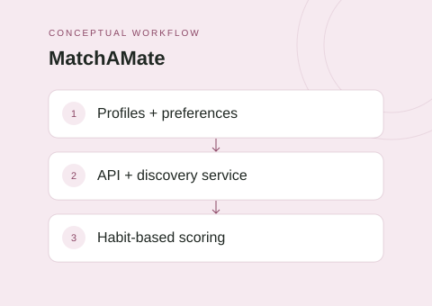

The idea
MatchAMate is a collaborative mobile application with a Flutter frontend and a service-based backend. The project connects user onboarding, profile and preference data, and discovery workflows through a Go API and a Python algorithm service.
My contribution
My main contributions to the team project were backend development and deployment.
Project scope
- Provide a Flutter mobile interface for iOS and Android.
- Support onboarding and user data through a Go REST API.
- Use a Python discovery service for habit-based scoring.
- Store data in PostgreSQL and coordinate backend services with Docker Compose.
Technical approach
The Flutter app communicates with a Go REST API, which connects to PostgreSQL and a separate Python discovery and algorithm service. Docker Compose runs the API, algorithm service, and database together, providing a shared environment for development and deployment work.
Scope & limitations
This overview describes the team's application and service architecture. It does not claim measured matching quality, public app-store availability, or production service performance.